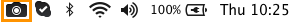

Advanced preferences
- Scale down retina images when sharing: When opening an image captured on a Retina display on a regular monitor, the capture appears twice as large as the same content captured on a normal display. This option scales down retina image captures when:
- Sharing images using the Output buttons.
- Dragging images out of Snagit Editor.
- Saving images onto your computer.
TIP: If you need to frequently switch between sharing the original image and the scaled down image, hold the Shift key when dragging the image from Snagit onto your computer or another program. Holding the Shift key while dragging pastes an image opposite of the default behavior selected for this option. For example, if this option is enabled, holding the Shift key pastes an image of the original size captured.
- Always create new canvas at this size: Sets the default image dimensions when you select File > New (Command-N). If you enable this option, the dialog to enter the dimensions for a new image will not open.
- Always use black and white menu bar icon: Select this option if you do not want to show the red Snagit menu bar icon when recording a video capture.

- Autosave Location: By default, unsaved image captures are stored as .snagproj files and video captures as .mp4 files in: User name/Documents/Snagit/Autosaved Captures.
Click the Choose button to select another location.
- Drag and paste format: Set the default file format when dragging captures from Snagit Editor into other applications.
- Restore Gallery Styles: Restore the default styles deleted from the styles gallery. Restoring the default styles does not affect any custom styles added.
- Restore 2.X Styles: Restore the default styles from Snagit on Mac version 2.
- Turn On/Off Mobile Sharing: You can import images and videos from your mobile device into the Snagit Editor for enhancing (image only) and sharing. Turn on this option to allow sharing between your mobile device and Snagit. See Import images or videos from a mobile device.
- Keep original image dimensions: Snagit automatically resizes mobile images for better viewing in Snagit Editor. Enable this option to import mobile images at the original dimensions.
- Connection Name: TechSmith Fuse remembers each connection and allows you to choose which instance of Snagit to send the mobile images or videos to. You can customize the name of each connection to be sure you are sending the files to the correct computer running Snagit.
- Port: Port number for connecting TechSmith Fuse to Snagit.
See also
General preferences
Capture preferences
Output preferences
Keyboard preferences
 Advanced preferences
Advanced preferences